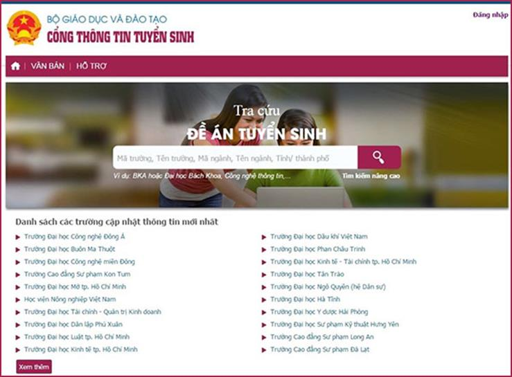

Cổng thông tin tuyển sinh của Bộ Giáo dục và Đào tạo

Lần cập nhật cuối lúc Thứ bảy, 01 Tháng 4 2017 09:35 Viết bởi Administrator Thứ bảy, 01 Tháng 4 2017 09:30
Kể từ ngày, 1/4/2017, thí sinh có thể tra cứu thông tin liên quan đến tuyển sinh của tất cả các trường đại học, trường cao đẳng sư phạm tại Cổng thông tin tuyển sinh của Bộ Giáo dục và Đào tạo tại địa chỉ http://thituyensinh.vn. Để hiểu rõ hơn về Cổng thông tin tuyển sinh, chúng tôi đã có cuộc trao đổi với ông Nguyễn Sơn Hải, Cục trưởng Cục Công nghệ thông tin, Bộ Giáo dục và Đào tạo.
Ông Nguyễn Sơn Hải, Cục trưởng Cục CNTT, Bộ Giáo dục và Đào tạo
PV: Ông có thể cho biết vai trò của Cổng thông tin tuyển sinh trong công tác thi THPT quốc gia và tuyển sinh đại học, cao đẳng năm nay?
Cổng thông tin tuyển sinh của Bộ Giáo dục và Đào tạo tích hợp các thông tin liên quan đến công tác chỉ đạo điều hành, cơ sở dữ liệu về kết quả kỳ thi THPT quốc gia, đề án tuyển sinh và điều kiện xét tuyển của các trường, hệ thống nhập dữ liệu thống kê nguyện vọng của thí sinh và các thông tin cần thiết khác theo Quy chế thi THPT quốc gia và Quy chế tuyển sinh năm 2017.
Đây là nơi cung cấp thông tin tuyển sinh công khai, chính thức với dữ liệu cập nhật, chính xác nhất từ các trường. Hiện tại đã có trên 300 cơ sở đào tạo đại học và các trường cao đẳng sư phạm công khai Đề án tuyển sinh năm 2017 trên cổng thông tin này.
Cổng thông tin tuyển sinh năm nay được triển khai trên diện rộng, nhằm mang đến sự tiện lợi cho thí sinh trong việc truy cập, tìm kiếm, tra cứu thông tin, từ đó chọn lựa các chương trình học, đăng ký và sắp xếp nguyện vọng phù hợp với mong muốn và định hướng của bản thân.
PV: Thí sinh có thể tra cứu những thông tin gì qua Cổng thông tin tuyển sinh?
Thí sinh có thể tra cứu tất cả những thông tin cần thiết để thực hiện đăng ký xét tuyển vào các trường đại học, trường cao đẳng sư phạm, bao gồm:
Thông tin về Đề án tuyển sinh của các cơ sở đào tạo đại học và các trường cao đẳng sư phạm cũng như thông tin các ngành tuyển sinh năm 2017, điều kiện đảm bảo chất lượng, phương thức xét tuyển, điều kiện xét tuyển thẳng… Trên cơ sở đó, thí sinh có thể cân nhắc, lựa chọn ngành đăng ký tuyển sinh phù hợp nhất.

Cổng thông tin tuyển sinh của Bộ Giáo dục và Đào tạo sẽ giúp thí sinh tra cứu tất cả những thông tin cần thiết để thực hiện đăng ký xét tuyển vào các trường đại học, trường cao đẳng sư phạm
Thông tin về đầu mối liên hệ của các Sở Giáo dục và Đào tạo, các trường đại học, trường cao đẳng sư phạm để hỗ trợ, giải đáp thắc mắc các nội dung liên quan đến kỳ thi THPT quốc gia và tuyển sinh năm 2017.
Thông tin về Quy chế thi, Quy chế tuyển sinh, văn bản chỉ đạo, điều hành của Bộ Giáo dục và Đào tạo, phân chia các cụm thi và các văn bản khác liên quan đến kỳ thi trung học phổ thông quốc gia và tuyển sinh năm 2017.
PV: Để có thể tra cứu những thông tin cần thiết từ Cổng thông tin tuyển sinh, thí sinh phải thao tác như thế nào?
Để có thể tra cứu được chính xác thông tin cần tìm, thí sinh cần thao tác 3 bước như sau:
Bước 1: Truy cập vào Cổng thông tin tuyển sinh của Bộ GDĐT tại địa chỉ: http://thituyensinh.vn
Bước 2: Gõ mã trường hoặc tên trường hoặc tên ngành cần tìm vào ô “Tìm kiếm”, sau đó bấm phím Enter hoặc nút “Tìm kiếm”. Ngay lập tức, danh sách các cơ sở đào tạo cần tìm sẽ được liệt kê lên màn hình.
Bước 3: Muốn xem thông tin một cơ sở đào tạo nào thì chỉ cần bấm nút chuột trái vào tên cơ sở đào tạo đó. Từ đây, thí sinh có thể tra cứu các thông tin chi tiết liên quan đến kỳ thi tuyển sinh năm 2017 của nhà trường.
Ngoài các thao tác như trên, đội ngũ hỗ trợ kỹ thuật của Cổng thông tin tuyển sinh cũng luôn luôn thường trực, sẵn sàng hỗ trợ tối đa thí sinh vitnbk.edu.vnrong quá trình tìm hiểu và tra cứu thông tin phục vụ đăng ký dự thi đại học, cao đẳng năm nay.
Nguồn: http://www.moet.gov.vn
- 10/07/2017 13:55 - Thể lệ trao thưởng Quỹ ươm mầm tài năng đất Quảng …
- 08/07/2017 16:10 - Những điểm 10 đặc biệt
- 15/05/2017 08:18 - Bộ đề thi tham khảo kỳ thi Trung học phổ thông Quố…
- 07/04/2017 09:34 - Bộ GD&ĐT giải đáp nóng về đăng ký dự thi THPT quốc…
- 04/04/2017 09:54 - 4 điểm khác biệt thú vị giữa tiếng Anh Anh và tiến…
- itnbk.edu.vn
- 30/03/2017 08:23 - Thủ tướng chỉ thị bảo đảm kỳ thi THPT, tuyển sinh …
- 09/03/2017 00:00 - Trường Chuyên Nguyễn Bỉnh Khiêm là chiếc nôi …
- 05/10/2016 10:44 - Thi trắc nghiệm môn Toán xác suất đỗ ăn may ngang …
- 28/09/2016 00:00 - Phương án tổ chức kỳ thi trung học phổ thông Quốc …
- 01/08/2016 12:45 - Hướng dẫn thí sinh đăng ký xét tuyển trực tuyến Đạ…